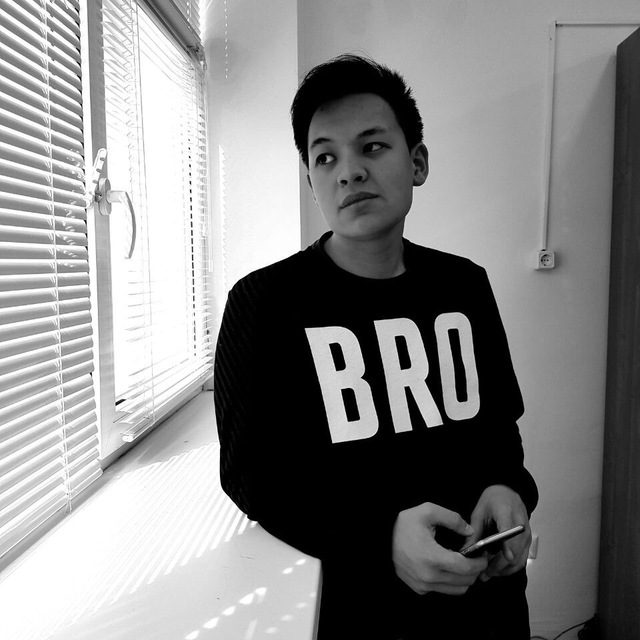

Sultan Kamzayev
My name is Sultan and I am a senior student at Nazarbayev University. I am majoring in World Languages and Literature (Literature track) and minoring in Mathematics, School of Sciences and Humanities

Contact Information
Phone Number: +77013221154
Email address: sultan.kamzayev@nu.edu.kz
Github account: @sulathesavage
Hi, Sultan
Education
Nazarbayev Intellectual School (Atyrau city), September 2013 - June 2016
APEC Higher College (Atyrau city), September 2016 - June 2018
Nazarbayev University (Astana city), August 2018 - June 2023
Job Experience
A tutor of Mathematics, English and Chemistry
Freelance, April 2016 - Present
An intern in Accounting Department
"North Caspian Operating Company" (Atyrau city), April 2018 - May 2018
An intern in Technological Department of Gasoline Production
"Atyrau Oil Refinery Plant" (Atyrau city), May 2018 - May 2018
An intern in Filmmaking department
"DAR IT" company (Almaty city), January 2021 - March 2021
An intern in Data Science program (Python)
"DECODE" programming school (Almaty city), May 2021 - July 2021
A Math tutor in Education Center
"SMG Education" Education center (Atyrau city), September 2021 - August 2022
Skillsets
High communication skills
High responsibility
Good punctuality
Good practical knowledge at Microsoft Office (Word, PowerPoint, Excel, Access)
Medium Programming Skills
Good experience in Digital Marketing
Good experience in Commercial Videography
Good analytical skills